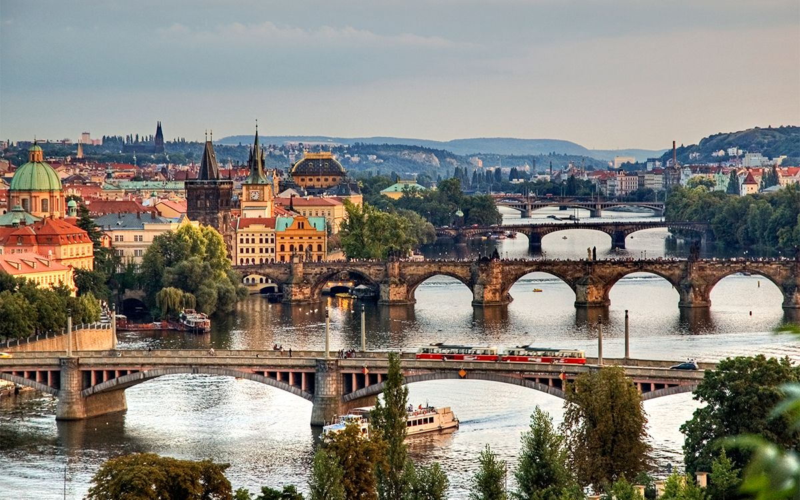

Historia y Tradiciones
Praga, conocida como la "Ciudad de las Cien Torres", tiene una rica historia que se remonta a más de mil años. Fundada en el siglo IX, fue el corazón del Reino de Bohemia. A lo largo de los siglos, Praga se convirtió en un epicentro de comercio, cultura y religión en Europa Central. Monumentos como el Castillo de Praga, el Reloj Astronómico y el Puente de Carlos son testigos de su historia vibrante.
Entre las tradiciones más populares destacan los mercados navideños, donde las plazas principales de la ciudad se llenan de luces, música, comidas típicas y artesanías únicas. Además, se celebran festivales como el Festival de Primavera de Praga, que atrae a músicos y artistas de renombre internacional.
Arte
El arte en Praga refleja su herencia histórica y cultural. Desde las catedrales góticas hasta los edificios barrocos y renacentistas, cada rincón de la ciudad es una obra de arte. Entre los puntos destacados están las vidrieras de la Catedral de San Vito, las esculturas del Puente de Carlos y las pinturas modernistas en el Museo Mucha. Este último celebra las obras del icónico artista Alphonse Mucha, reconocido por su estilo Art Nouveau.
Además, la ciudad alberga numerosos teatros y galerías, como el Teatro Nacional y la Galería Nacional, que preservan la riqueza cultural de la región.
Cultura
La cultura de Praga es una fusión de lo antiguo y lo moderno. Además de su arquitectura histórica, la ciudad se ha convertido en un importante centro de literatura, cine y gastronomía. Los cafés literarios, como el Café Louvre, fueron frecuentados por escritores como Franz Kafka y Albert Einstein. La cerveza checa, que tiene una historia milenaria, es una parte esencial de la vida cotidiana, con tabernas locales que ofrecen experiencias auténticas.
La vida nocturna de Praga también es destacada, con bares y clubes ubicados en edificios históricos. Esto crea un contraste fascinante entre la historia y la modernidad que caracteriza a la ciudad.